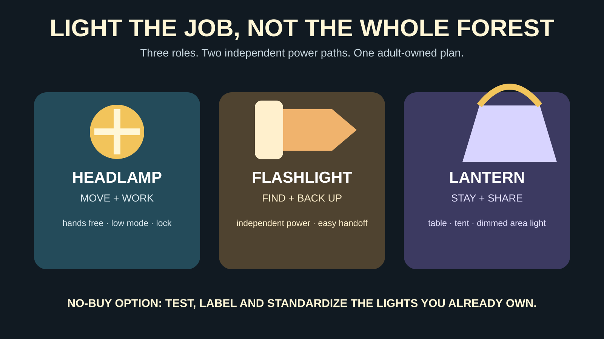

GEAR SYSTEM · LIGHTING
Family Headlamps: Rechargeable vs AAA—and When a Flashlight or Lantern Is Better
The brightest light is rarely the useful one. Put a controllable headlamp on the moving adult, give children simple roles, and make the backup independent of the first battery failure.

Who needs this—and who should skip the purchase
Buy or reorganize: families who camp, hike, return from practices after dark, keep an emergency kit, or routinely discover that every light uses a different cable or dead battery. Skip the purchase: families that already own two reliable lights with compatible power, working controls and enough runtime for their real trips. Test and label those first.
The National Park Service includes illumination among the Ten Essentials, recommends headlamps because they are hands-free and says to carry extra batteries. Ready.gov includes flashlights and extra batteries in emergency kits. Neither source says a family needs a tactical spotlight, six modes or a premium brand.
Start with the job: move, find or stay
Headlamp — for movement and hands-on work
Use a headlamp for trail walking, tent setup, a tire change from a safe location, cooking cleanup and nighttime bathroom trips. The useful features are a stable strap, a low mode that does not blind the group, a control sequence an adult can remember under stress, and a physical or electronic lock that prevents the lamp from turning on inside a pack.
A child-size strap is not automatically a child-safe product. Check the maker's age guidance, battery access, cord and strap design, heat warnings and supervision instructions. The adult still owns navigation and the return decision.
Flashlight — for independent backup and deliberate pointing
A simple handheld light is easy to pass between adults, aim under a seat, keep in a car door or use when the headlamp fails. It also provides battery independence if it does not share the same sealed pack or charger. The tradeoff is obvious: one hand is occupied, and a child can wave the beam into faces or traffic.
Lantern — for a stationary zone
A dimmable lantern makes a table, tent or power-outage room usable without turning every head. Keep brightness low enough to see people and obstacles. Hang or place it where children cannot pull it down, cover it, or bring it into contact with fabric contrary to the instructions. A lantern is area light, not a walking system.
Rechargeable vs replaceable batteries
Rechargeable: fewer loose cells, one charging obligation
An integrated rechargeable light is convenient when the family already carries compatible cables and can top it up before leaving. Compare the exact charge connector, charge indicator, maker-stated runtime by mode, cold-weather guidance and whether the battery can be replaced at end of life. A USB-C-shaped port does not prove every charger is approved or every cable behaves the same.
The Consumer Product Safety Commission notes that battery and charger hazards can include overheating, fire, electrical shock and thermal burns, and recommends that batteries, chargers and end products be designed and tested as a system. Follow the supplied instructions, use a suitable charger, stop using damaged or swollen equipment and check the CPSC recall database. Do not charge a lamp under bedding, inside a closed hot car or where a child treats the cable as a toy.
AAA or AA: fast replacement, more inventory to manage
Common replaceable cells make sense for a car kit, a long weekend without charging or a family that standardizes several lights on one cell size. Store matched spares dry and separately so terminals cannot contact metal. Do not mix old and new cells, brands or chemistries unless the manufacturer explicitly permits it. Remove batteries for long storage when the instructions advise it, and inspect for leakage before a trip.
Hybrid systems: useful only if the fallback is real
Some lights accept a proprietary rechargeable pack and common cells. That can be excellent, but verify the exact model's compatibility rather than assuming the battery compartment will take whatever is in the drawer. A backup that needs an adapter left at home is not a backup.
How to read the specifications without getting played
Lumens are output, not usefulness
More output can help with distant route finding, but it also consumes power, creates glare and destroys everyone's ability to see outside the beam. For camp chores and group walking, a stable low or medium mode is usually more important than the maximum burst. Compare runtime at the mode you will actually use, and note whether the published number steps down as the lamp regulates heat or battery demand.
Beam shape beats one headline number
A broad flood beam helps with close work and group walking. A narrow spot reaches farther but encourages children to point it everywhere. Some headlamps combine both. Choose the beam for the task; do not infer distance or comfort from lumens alone.
IP ratings have a defined meaning
The International Electrotechnical Commission's IEC 60529 system classifies enclosure resistance to dust and liquid ingress. Read the exact two-character rating and the manufacturer's test claim; “weatherproof,” “water-resistant” and “waterproof” are not interchangeable technical results. A rating also does not promise that seals remain perfect after drops, heat, age or an open charging cover.
Red light is a behavior tool, not magic
A low red mode can reduce the blast of white light around camp and make it easier not to wake a tent. It does not make poor navigation safe, guarantee preserved night vision for every task or excuse shining the beam at wildlife. Low white light used carefully is better than a complicated red mode nobody can find.
The four buying checks that matter
- Fit: test it over the hat or hood actually used. Shake the head gently, look down and confirm the lamp stays aimed without painful strap tension.
- Controls: from off, can the responsible adult reach a useful low mode without cycling through a strobe or maximum blast? Can the lamp lock for travel?
- Power: write down the cell or cable, the maker's relevant runtime and the independent backup. Avoid a family kit that requires four charging standards.
- Environment: verify the exact ingress rating, temperature guidance and charge-port closure for rain, snow, boats or a damp campsite.
These are category checks, not product endorsements. The comparison links below use Mr Adventure Dad's approved Amazon Associate setup. We do not claim firsthand testing, current price, stock, ratings, exact runtime, water resistance or child suitability. Confirm the maker's model-specific instructions and current recall status before buying.
A practical family loadout
Local evening event or walk
One adult headlamp, one independent flashlight and reflective or high-visibility clothing may be enough. The children stay with the adult; giving each child a light is optional, not a substitute for the separation plan in the family communication guide.
One-night family camp
Give each moving adult a headlamp. Add one dimmable lantern for the table or tent and one independent backup light stored where everyone can name it. Children may carry simple lights under supervision, but an adult owns the route to the restroom, the fire boundary and the final battery check. Pair this with the one-night camping plan.
Day hike with a dusk consequence
Carry a headlamp even when the plan says daylight. NPS guidance specifically treats illumination as an essential and says phone light does not replace a headlamp or flashlight in its hiking guidance. Put the lamp in the adult-owned hiking pack, locked off, with its independent energy source.
Car emergency or home outage
Use an easy-to-find flashlight for quick access, a headlamp for hands-free work, and a lantern only after the space is stable. Rotate or charge on a written schedule. The winter car kit covers warmth, traffic and the decision about whether it is safe to leave the vehicle.
The five-minute pre-trip lighting protocol
- Turn on every light; do not trust the battery indicator alone.
- Run the intended mode for at least a minute and check for flicker, heat, damaged housings or loose covers.
- Confirm the headlamp fits the actual wearer and outer layer.
- Lock switches for packing or protect them from pressure.
- Pack compatible spare cells or a charged independent light—not merely another device that drains the same power bank.
- Tell every adult where the backup lives.
- Set the turnaround so the light is contingency equipment, not permission to start a risky night hike.
Failure modes and kid rules
Dead on arrival: switch to the independent backup and shorten the plan. Cold drains power faster than expected: keep the spare protected and end before both sources weaken. Child points into faces: the light returns to an adult. Lost on trail: stop, keep the group together, use the light conservatively and follow the trip's emergency plan; wandering faster in a brighter beam is not navigation.
Wet light: follow the maker's instructions; do not assume an IP rating covers an open port or damaged seal. Hot, swollen, leaking or recalled battery: stop using it, isolate people from the hazard without handling it recklessly, and follow CPSC, manufacturer and local disposal guidance. Thunder: a headlamp does not make the trail safe. Move to a substantial building or enclosed hard-topped vehicle.
The no-buy option
Gather the lights already in the house. Pick one hands-free primary if available, one independent backup and one stationary area light only if the trip needs it. Standardize batteries or cables, replace failed cells responsibly, label the storage location and schedule a monthly test. If the existing flashlight is reliable and the family is only walking from a parking lot to a field, use it. Prepared beats optimized.
Keep the lighting module beside the grab-and-go supplies in the family day-trip system. The goal is not to own darkness gear. It is to remove one predictable point of failure.
Official sources and check date
Safety and standards references were checked August 27, 2026. Product specifications and recalls can change.
- National Park Service: Ten Essentials
- National Park Service: hiking safety and illumination
- Ready.gov: build an emergency kit
- U.S. Consumer Product Safety Commission: battery safety
- CPSC: current recall database
- International Electrotechnical Commission: IP ratings
MAKE THE WEEKEND COUNT
Useful beats heroic.
Build the day your family can finish well, then leave enough energy for the ride home.
More family plansTHE USEFUL STUFF
Gear that removes friction.
These are practical categories to compare—not a reason to overpack. Check fit, specifications and current reviews before buying.
Paid links: As an Amazon Associate I earn from qualifying purchases. You pay no additional cost.
Rechargeable headlamps
Compare fit, a real lock mode, low-output control, charge-port design and the maker's runtime table.
See current options → COMPARE ON AMAZONReplaceable-battery headlamps
A common-cell model can be easier to revive away from outlets; store matched spares separately and dry.
See current options → COMPARE ON AMAZONDimmable camp lanterns
Use area light at the table or tent, not as a substitute for the hands-free light each moving person needs.
See current options →